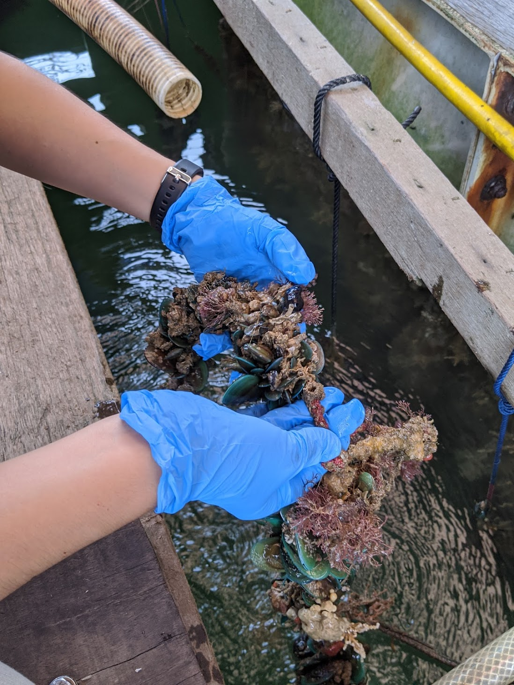

13.8 Billion years ago
The big bang. The universe as we know it begins.
3.5 Billion years ago
Photosynthesising bacteria arises amongst the first lifeforms.
394 Million years ago
The earliest tetrapod may have first waded on land.
2.8 Million years ago
The Homo genus first evolves and possibly resulted in the first high five.
10,000 years ago
Cats were domesticated.
3800 Years ago
Reviews for the earliest fiction written in prose comes out.
196 Years ago
First permanent photograph taken.

23 Years ago
My sneeze captured on film for the first time.
20 Years ago
I was spotted, gallivanting amongst foliage in the Singapore Botanic Gardens.
4 Years ago
I enrolled in University to read Environmental Biology.
3 Years ago
IÂ investigated marine biofouling at the Tropical Marine Science Institute.
2 Years ago
I researched Singapore's wasps at the Insect Diversity Lab.
1 Year ago
I interned at the Singapore Botanic Gardens.
2 Months ago
I got to work and built this website!